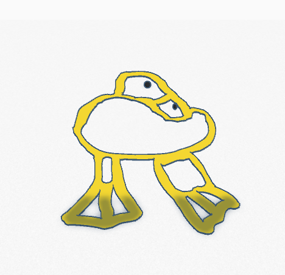
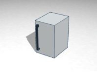
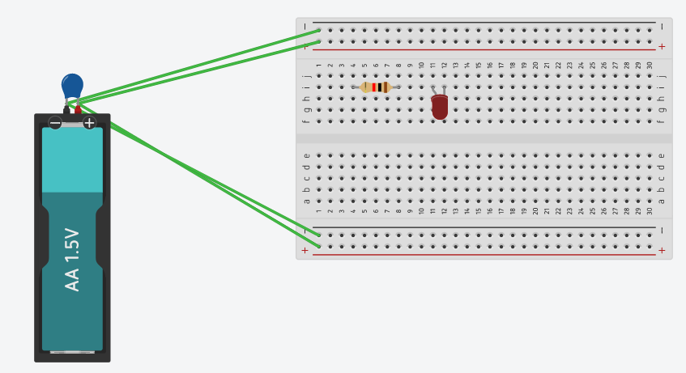
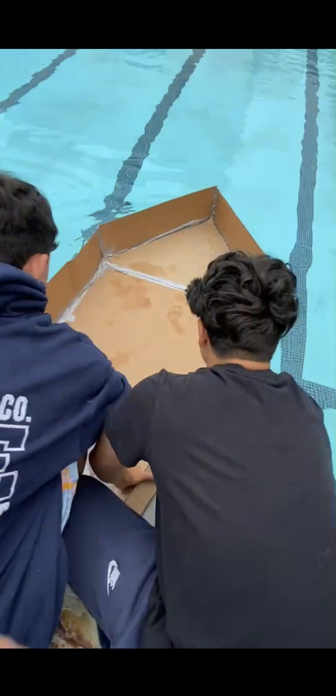
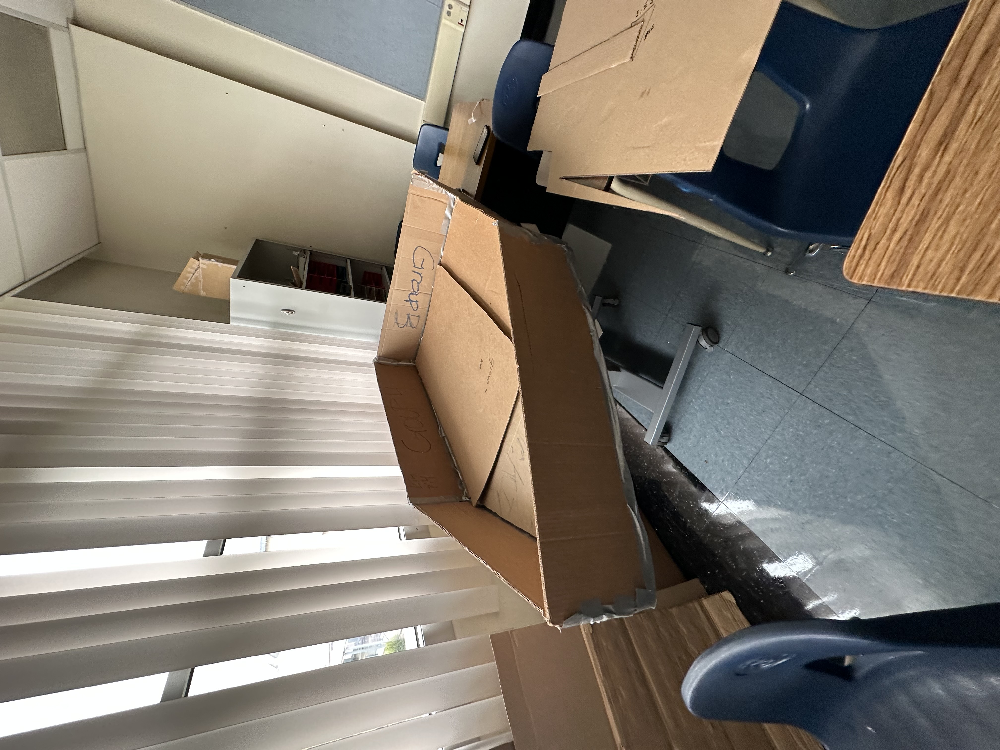

<!DOCTYPE html>
<html>
    <body style="background-color:Gold;">
    </body>
</html>
<html>
    <head>
    <style>
    
    u1 {
        list-style-type:none;
        margin: 0;
        padding: 0;
    }
    
    li a {
        display: Block;
        color: Gray;
        background-color:#FFFFFF;
        padding : 8px 16px;
        text-decoration: none;
    }
    li {
        display: inline;
    }
    
    
    
    li a:hover {
        background-color: #FFFFFF;
        color: black;
    }
    </style>
    
    </head>
    <ul>
        <li><a href="Home.html">Home</a></li>
        <li><a href="Journal.html">Journal</a></li>
    </ul>
        
        
       <h4>Engineering Journal</h4>
    <p>9/2/2022 - This week, we went on Tinkercad. We learned basic shapes. We also continued with coding.
    <p>9/16 - This week we began on our rube goldberg project on tinkercad </p>
    <p>9/23 - This week we are now building our rube goldberg machine</p>
    <p>9/30 - This week we are completing our rube goldberg machine</p>
    <p>10/3 - This week we began on bioengineering</p>
    <p> 10/10 - This week we are cadding a rocket we are making</p>
    <p> 10/21 - This week we are making the rockets</p>
    <p> 11/1 - This week we began on electrical engineering</p>
    <p> 11/8 - This week we started doing hands on activities</p>
    <p> 11/16 - This week we started using Arduino</p>
    <p> 11/25 - This week we started building our bridges.</p>
    <p> 12/2 -This week we desided to change our bridge design.</p>
    <p> 12-9 - This week we tested our bridges</p>
    <p> 12-16 - This week we finished up our bridges</p>
    <p> 01/11 - This week we started learning about buisness engineering.</p>
    <p> 01/18 - This week we started learning about chemical engineering.</p>
    <p> 03/03 - This week we tested our mousetrap cars, Martin and I did pretty
    good. Even though the final result was okay, the process was a little shaky. 
    At first, we slacked off a little, and we were just messing around. Then, 
    we started on our car, and things were going good until near the end, where 
    we discovered problems iwth our car. Due to this, we had to make a new one.
    In the last go, Martin and I locked in and just finished our project in 
    time, which was very nice. And the test, was also nice.</p>
    <p> 03/09 - This week we made a boat,then we saw how far it would go in a little stream of water. We used materials like balloons, cups, and more to  craft our boat. Then, we went outside and tested them, and our group of four (Me, Martin, Preston, Josh) did very good, and our boat traveled  a whopping 78 inches. </p>
    <p> 03/16 - This week we began brainstorming on our egg drop project, and we also made a CAD for the egg drop. We began gathering materials like straws, cardboard, balloons, etc. </p>
    <p> 03/23 - This week we began building our egg drop project using straws, balloons, cardboard, and other materials. We got past halfway done with building, as we will finish it and test next week. </p>
    <p> 03/30 - This week we concluded our egg drop project and tested ours. Our group's project was succesful as the egg did not break on impact, it went well in conclusion.</p>
    <p> 04/06 - This week we began brainstorming ideas regarding our  final project, the cardboard boat. We decided that it will be Martin and I in the boat.</p>
    <p> 04/13 - This week we made a CAD for our upcoming final boat and worked  on updating our websites. Our group decided to settle for a generic boat, nothing extra. </p>
    <p> 04/20 - This week we began building our boats. We used lots of cardboard and we made good progress by the end of the week. We are around halfway done with our project.</p>
    <p> 04/28 - This week we began measuring lengths for the sides of our boat and cut out some cardboard. We didn't build much, but we will catch up next week.</p>
    <p> 05/04 - This week we focused on the bottom portion of our boat, cutting pieces out to fit our expectations. We did a bit of taping, and we are nearly finished.</p>
    <p> 05/12 - This week we continued with our boat, just with taping mainly. We also built a paper roller coaster
    on friday. We started off by trying brainstorming crazy ideas like loops, but then we agreed to just do the basics.
    After many failed attempts and many pieces of our coaster breaking, we got it to work.It was small, but it ended up succesful.</p></p>
    <p> 05/19 - This week, we finalised our boats. We fully taped the walls, and made sure the construction was secure.
    We were one of the last groups to finish, since our walls fell off previously and we had to redo them. But in the end our boat is ready to go.</p>
    <p> 05/26 - This week we relaxed. Our boat was finished and we had nothing to do. Me and Preston decided to chat about soccer as I imagined myself falling in
    the water next week.</p>
    <p> 06/02 - This week, we did the final. Yesterday we fixed minor changes on our boat as we prepared for the test. When it was our turn,
    we slowly sunk the boat into the water. I then go into the boat, as the boat quickly carried away and I was by myself. The boat quickly sunk
    and I swam to the end of the pool while carrying the boat. Our boat was not succesful, but I got across the</p>
</html>

<html>
    
    <iframe width="450" height="300"
    src="https://www.youtube.com/embed/7AW6oWfmwes">
    </iframe>
    <br>
    
    
    
    
    
    link </a>
    
    
    
    </html>